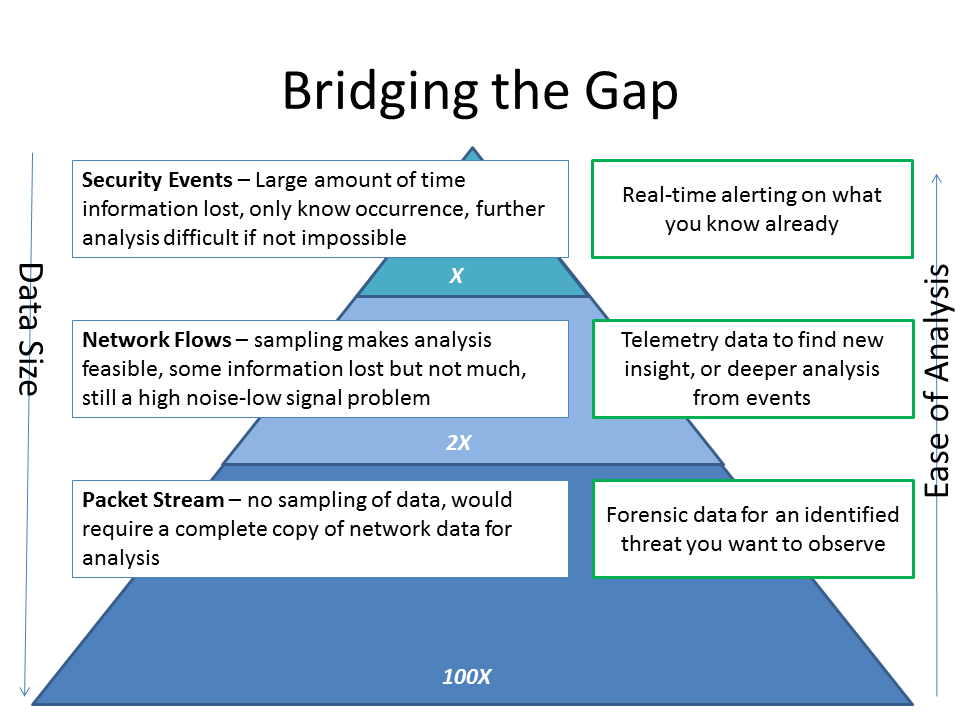

While this is not the first blog post about Apache Spot, it is the first one by a creator of the solution. As a security data scientist in Intel’s Data Center Group, I joined a small team to start thinking about solving really hard problems in cloud analytics. The team grew, and out of that effort, came Apache Spot. Since we started talking about the project, these are the three questions I am asked the most.
What Is Apache Spot?
Apache Spot is an open source, flow and packet analytics solution built on Hadoop. It combines big data processing, at-scale machine learning, and unique security analytics to put potential threats in front of defenders. While I am a data scientist today, I was a security investigator just a few years ago. I wanted to develop a solution that would put new tools and technology in play for defenders, but without requiring them to walk away from security and get a math degree.
We wanted to start with the hard problems, so we looked at the emerging need to analyze data that was produced at a scale outside what a lot of security solutions could handle. The data is being created today, and lack of visibility into that data gives attackers a profound advantage. Also, in this new era of security, many defenders (public and private sector) have to answer to their citizens and customers when these threats occur. In other words, an event that says “this attack was blocked” is insufficient; an organization needs to see what happened before, during, and after a particular machine was attacked at a particular time. The problem is summarized in a slide from a FloCon talk

{kind=link}
The gist is that while processing is a challenge at higher scales, the amount of insight gained is higher when analyzing flows and packets from key protocols (like DNS). And that’s how we got here.
Why Intel?
At Intel, I have worked in IT, for a security product company (McAfee), and in the Data Center Group. Intel IT was an early pioneer of the concept of proactive investigations to protect intellectual property. McAfee (now Intel Security Group) has a broad customer base in the realms of network, endpoint, and content security, to name only a few. And the Intel Data Center group has strategic partnerships with Cloudera and Accenture, as well as some pretty cool analytics efforts of their own. Add the performance benefits we achieve with Intel Architecture, especially the Intel MPI Library and Intel Math Kernel Library, and it certainly makes sense to me.
Why Open Source?
I learned from my earlier efforts in security analytics, that to invite collaboration from academia, the public sector, and the private sector, open source software is an excellent choice. We are now seeking to build a community of developers, data scientists, and security enthusiasts to grow Apache Spot into something we can all be proud of. We have also chosen an Apache software license, so that it can enrich commercial software offerings as well.
The greatest thing for me since we announced at RSA is to hear OTHER people talk about Apache Spot (formerly Open Network Insight or ONI), here are some of my favorites, from a Data Scientist @ eBay , a Security Provider, and a Big Data company.
Fork us on Github!
Grant Babb